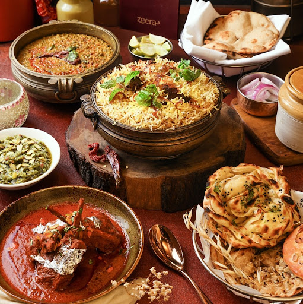
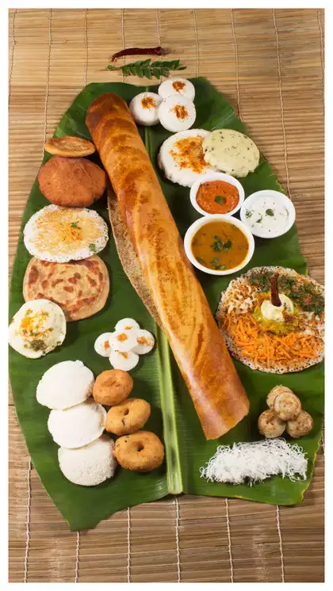

North India: A celebration of Rich Flavors
Join me on North Indian food, It is a treasure trove of rich, creamy, and flavorful dishes
that will leave you wanting more. From the iconic Butter Chicken to the decadent Galouti
Kebabs, North Indian cuisine is a true delight. The region's rich history and cultural
heritage have contributed to the development of a unique and diverse culinary tradition that is reflected in its dishes. Whether you're in the mood for something spicy or something comforting, North Indian cuisine has something for everyone.

- Galouti Kebabs: Galouti Kebab recipe also known as galawati kebab is a Lucknowi popular
recipe which has a melt in mouth texture to it which is similar to mutton shami kebab. This
kebab is made with minced mutton, spices, raw papaya, fried onions and many more to create this
soft and juicy kebab.
- Naan Bread: A staple in North Indian cuisine, naan is a soft, fluffy bread that pairs
perfectly with a variety of curries and gravies.
- Biryani: A traditional biryani consists of fluffy basmati rice layered over tender &
succulent pieces of meat, accompanied with the mesmerizing aromas of spices, herbs & caramelized
onions.
- Butter Chicken: This beloved dish is a North Indian classic, featuring tender chicken
cooked in a rich, creamy tomato sauce. It's a perfect blend of spices and flavors, often enjoyed with naan or rice.
North Indian cuisine is known for its indulgent use of dairy products like ghee, butter, and
cream, which lend richness to the dishes. Spices such as cumin, coriander, and garam masala play a
crucial role in creating the robust flavors typical of this region.
South India: A Symphony of Spices
Join me on South India food, The main ingredient used in the making of traditional South
Indian Dosa is lentils. Lentils are super rich in plant based protein and they are in themselves very
nutritious. Added with other healthy ingredients, South Indian dishes like Dosa make for the
best and healthiest meals.

- Dosa: A crispy, fermented crepe made from rice and lentils, dosa is a breakfast staple
in South India. It's often served with coconut chutney and sambar, a tangy lentil soup.
- Idli: Soft, fluffy steamed cakes made from rice and urad dal (black gram), idlis are a
healthy and delicious breakfast option.
- Sambar: Sambar, a spicy lentil dish peppered with hot chilies. Made up of crushed
spices, sweet tamarind, hearty vegetables, and a creamy lentil base, sambar is best served alongside
idli, dosa, vada, and steaming rice.
South Indian cuisine is characterized by its extensive use of spices, tamarind, coconut, and
curry leaves. The flavors are bold and often include a balance of sweet, sour, and spicy elements.
West India: A Fusion of Flavors
The cuisine of Western India is diverse. Maharashtrian cuisine is diverse and ranges from
bland to fiery hot. Pohay, Shrikhand, Pav bhaji and Vada pav are good examples of Maharashtrian
cuisine. Goan cuisine is dominated by the use of rice, coconut, seafood, kokum and cashew-nuts.
- Dhokla: A savory steamed cake made from fermented rice and chickpea flour, dhokla is a
popular snack from Gujarat, known for its light and fluffy texture.
- Pav Bhaji: A popular street food, pav bhaji is a spicy vegetable mash served with
buttery bread rolls. It's a perfect blend of textures and flavors, making it a favorite snack across
India.
- Goan Fish Curry: With its Portuguese influence, Goan cuisine offers a unique blend of
spices and flavors. The fish curry is made with coconut milk, tamarind, and a special spice paste
that creates a tangy, aromatic dish.
West Indian cuisine is a fusion of flavors influenced by the diverse cultures of the region. The
use of coconut, peanuts, and fresh herbs adds depth to the dishes, while seafood plays a prominent
role in coastal areas.